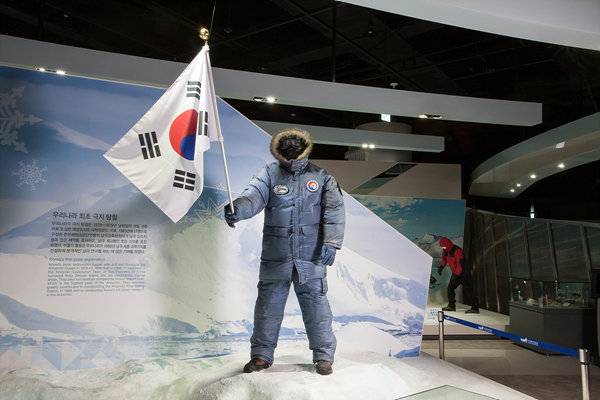

전라도 군적(全羅道 軍籍)
1855년(철종 6년)에 작성된 군적으로 절도사가 서명한 군적문서이다. 군인 징발을 목적으로 만들어진 전라도 지역의 군적문서였으나, 뒷면을 이용해 『가례家禮』를 간행하는데 사용하여 문서의 아랫부분을 비롯한 일부분이 훼손되었다.
한국 / 1855년 / 종이
해관문서
해관은 오늘날의 세관처럼 수출입 화물에 대한 관세 사무를 보는 행정기관이다. 관세는 국내산업을 보호하면서 국가 수입원도 되기 때문에 외국과의 통상거래에 있어 매우 중요한 역할을 한다.
한국 / 1891년,1893년 등 / 종이
어피 공예품(각게수리)
상어의 껍질을 가공하여 장식한 어피 공예품이다.
어피를 매끈하게 가공하면 작은 물방울 같은 모양이 나타나는데,이렇게 가공한 어피를 안경집, 가구 등 여러가지 물건의 표면에 씌워 장식하였다.
한국 / 조선 / 나무, 금속 등
조선통신사선단도
조선통신사 선단이 일본에 입항하는 모습을 그린 그림이다. 그림 좌측 밑에는 작은 배에 갈아타고 뭍으로 향하는 통신사 고관들의 모습과 선창에서 일행의 도착을 기다리는 일본 사람들의 모습이 묘사되어 있다.
일본 / 18세기 / 종이
조선통신사 봉별시고
1811년(순조 11) 통신사 일행을 송별하면서 일본인들이 지은 시이다. 신미년 통신사는 윤3월 12일에 동래에서 출항하여 29일에 대마도 부중府中에 도착하였고, 7월 3일에 부산으로 돌아왔다.앞의 1수 봉별도호이군(奉別都護李君)은 통신사 영접을 위해 파견된 당시 일본 최고의 유학자 마츠자키 고도(松崎慊堂)가 통신부사 이면구(李勉求)에게 지어준 칠언배율(七言排律)의 송별시이다.
일본 / 에도(1811년) / 종이
조돈 유서
1756년(영조 32) 2월 12일에 영조가 충청도관찰사·겸병마수군절도사·순찰사 조돈(趙暾)에게 밀부 제1부와 함께 내린 밀부유서이다. 조돈은 승정원 좌승지에 재임 중에 유서를 받고 1756년(영조 32) 2월 4일에 충청감사에 부임하여, 1756년(영조 32) 10월까지 약 8개월간 역임하였다. 내용은 다음과 같다.
한국 / 1756년 / 종이
쿡 선장의 항해기
쿡 선장의 항해기 초판본이다. 제임스 쿡(James Cook, 1728~1779)은 영국의 탐험가이자 항해가로,‘캡틴 쿡’으로 잘 알려져 있다. 그는 세 차례에 걸쳐 태평양 등을 항해하며 새로운 지리 정보를 발견하였다.
영국 / 1773년, 1777년, 1784년 / 종이, 가죽

남극세종과학기지 대원 방한복
한국 최초의 남극과학기지에 다녀온 제1차 월동대원들이 착용한 방한복이다. 푸른색 상하의에 장갑과 방한화를 신고 있으며, 얼굴에는 바람을 막을 고글과 마스크를 착용하고 있다.
한국 / 1988년 / 합성섬유
해좌전도
조선시대에 제작된 초기판본의 해좌전도이다.특히 울릉도, 대마도, 제주도에는 육지와의 뱃길이 표현되어 있다. 산맥과 하천, 육로, 도 경계 등이 표현되어 있으며,특히 울릉도, 대마도, 제주도에는 육지와의 뱃길이 표현되어 있다.
한국 / 조선후기 / 종이